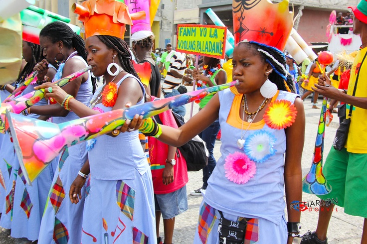

Le carnaval en Haïti est une célébration annuelle qui dure plusieurs jours et qui est considérée comme l'une des plus importantes manifestations culturelles du pays. Le carnaval haïtien est célébré dans les rues des principales villes du pays, notamment à Port-au-Prince, Cap-Haïtien et Jacmel.
Le carnaval haïtien est une fête qui remonte à l'époque coloniale française, mais qui a été adaptée et transformée au fil du temps pour refléter la culture haïtienne unique. Pendant le carnaval, les gens se déguisent en costumes colorés et se rassemblent pour danser, chanter, jouer de la musique et participer à des défilés. Les groupes de danseurs et de musiciens, appelés "bandes", défilent dans les rues au son de la musique traditionnelle haïtienne.
Origine:
Le Mot carnaval vient du latin carne vale signifiant “adieu à la chair”, une référence non seulement à la viande mais aussi à tout autre plaisir interdit durant les 40 jours de Carême. C’est pourquoi, durant les jours précédant le Mercredi des Cendres, premier jour de Carême, il était coutume dans les pays catholiques de l’Europe Occidentale de manger à satiété et de s’adonner à toute autre débauche rivalisant des fois, les Bacchanales, les Saturnales et les Lupercales de l’Empire romain.
Défoulements en Haiti
En Haiti, le carnaval demeure donc un temps de grandes réjouissances populaires et d’intenses défoulements. Appelée “mardi gras” la saison dite de carnaval commence le Dimanche après l’Épiphanie (6 Janvier) pour atteindre sa culmination durant les trois jours précédant le Mercredi des Cendres. Comme disait un ancien maire de Port-au-Prince, dans la société haïtienne, cette festivité n’est pas négociable.
Durant les dimanches de préparations, des groupes à pied ou sur des camions transformés pour la circonstance en chars se déambulent dans les principaux artères des grandes villes et de certaines communes. C’est donc une façon pour ces groupes de tester la composition musicale qu’ils ont préparée pour la circonstance.
Pendant les trois jours gras, les différentes mairies sont responsables des défilés quotidiens. Elles prennent en charge les frais associées à la participation de certains groupes. Les participants à ces défilés se déguisent au gré de leur fantaisie portant des masques de fabrication étrangères ou créées localement. Les membres des groupes de quartier ou des clubs portent un déguisement démontrant leur affiliation.
Jusqu’au milieu des années 80, les déguisements étaient plutôt traditionnels, avec un goût poussé pour les habitants précolombiens (les indiens) et certains personnages grotesques de l’histoire (ex. Charles Oscar, chef de la Police du président Vilbrun Guillaume Sam). Toutefois, récemment, il devient de plus en plus courant de voir des participants se déguiser en fameux et contemporains personnages.
Les défilés sont animés par des groupes musicaux montés sur des chars flamboyamment décorés aux frais de commanditaires ou des mairies et dont la musique rythmique (méringue) entraînent participants et spectateurs. L’observateur impassible ne manquera probablement pas de noter que ces défilés sont en quelque sorte une fusion de spectacle pompeux, de musique, de danse et d’émotion accompagnée quelques rares fois, de violences. Mirville y voit même des “manifestations d’actes symptomatiques, d’actes perturbés et d’actes inhibés”. Il explique, par exemple, que “la parodie grivoise des chansons originellement innocentes répondent […] à des tendances inconscientes profondes
Carnaval national et local:
Jusqu’à tout récemment, le carnaval à Port-au-Prince était le de facto « carnaval national ». Haïtiens et touristes étrangers venaient d’un peu partout pour y assister ou y participer. Ces dernières années, le carnaval à Jacmel se fait une certaine renommée à cause de sa créativité. Des milliers de visiteurs se déferlent sur la métropole du Sud-Est pendant ces festivités qui ont lieu généralement une semaine avant celles de Port-au-Prince.
